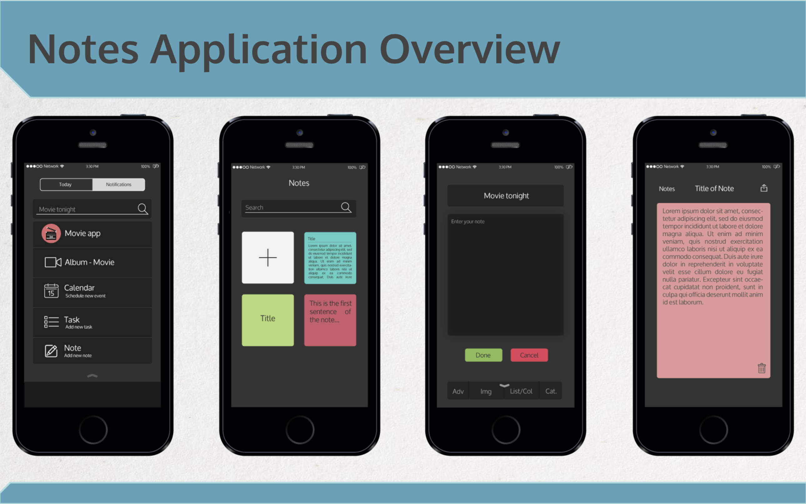

Mobile Designs: Calendar, Tasks, and Notes
- Calendar was designed to be easy to use by putting large colorful selectable events on screen with the ability to quickly scroll throughout your upcoming events
- Having previously done some work in the schedule sharing space with a previous project, I immediately identified schedule sharing to be a key asset of use for this design, this could allow for easy sharing and following friends schedules


- Day View

This view is designed to allow for quick access to your next 7 upcoming days. The left column swipes up/down to scroll through upcoming and previous days. The right column allows for scrolling through the day itself, with an 12 hour viewable range. The 'Share' button in the top left allows for sharing at any time level, day/week/month, or even continued sharing with authorized people!
- Week View
Week view is the primary starting view of our calendar application as we decided it was the timeframe most focused on when looking at their calendar. This view would should 8 days at a time and would allow for scrolling of days on the left column and scrolling of time on the bottom row. The 'Calendars' button in the top right allows for the viewing and comparing of all of your, and your friends', calendars.
- Month View
The most macro view of this application focuses on months. The left column allows for scrolling of months with 6 months viewable at any given time. All month days are selectable with a detailed hourly view under the month itself. This view gives extra value by offering complex views not normally offered in calendar applications at the time.

- Calendar Share Mode
Share mode was envisioned to fix one of the hardest aspects of meeting with others, determining mutually open time slots on both your friends'/co-workers' calendars and your calendar/s. To do this we would utilize common discovery tactics by phone number, contacts, or emails.
After entering all applicable information we could find and suggest meeting times based upon date/time ranges and then add additional detail info such as, a mutually shared meeting location commonly seen in past calendar events or open spaces close to all participants last entered calendar event (if an event exists on same day before proposed event). NOTES: Upon our last demo, when this feature was fully realized and discussed, this feature gained the most praise. As college students regularly have wildly varying class/work schedules, easily finding common calendar oepnings was seen as a huge time save. I personally saw this to be a running theme through a number of shared events and projects. - Tasks was designed to offer large easily selectable category tiles to view lists of items needing action
- Categories offer ways to categorize and then minimize current task lists, in our mock-ups we have shown the examples of categorizing by a class title or a shopping list, for instance
- We focused on large easily readable fonts and quick swipe actions for completion or deletion of tasks
- Task entry allows for much detail, but it does not require anything more than a title
- Tasks: Organizing Activity
Starting with our left most mock-up, we organized a single entry area for text with the ability to move it into whichever application is applicable at the time. This allowed all our applications to sync with one another to create a unified calendar event/task/notes insertion point.
Next is our task category view, this view allowed for viewing all categories before selection and also the entry of new categories. Category 1 is present in our third mock-up, this category is a random assortment of tasks for demo purposes. Here we are illustraing the usage of the quick complete and quick delete features accessed by simply swiping right or left, respectively. Last, we have the task entry view. Allowing for a detailed amount of description was important to us, but it was equally important to offer alot of info as it was to quickly enter new tasks, so only the title field is mandatory to task creation. 
- Notes was designed to offer a simple no frills quick text entry experience
- We wanted large colorful note tiles to select, as the note itself becoems more dense with text, so does the note tile giving an indication of the notes' current textual size
- For entry, we included some common text editting tools, such as bulleted lists, images, and fonts
- 
- Notes: Organizing Thought
Notes, Tasks, and our Calendar solution all utilize the same "single entry" area for titles, only after selecting a title do we decide type of item we are creating. Though normal methods of direct application selection and entry would exist, we believed this to be a novel way to create new items.
The second mock-up from the left, highlights the note selection view which allows for limited viewing of notes before selection. Text sizes decrease for larger notes but stay readable.Note entry, though simply interfaced, allowed for advanced entry items to be selected under the main text entruy area. In our last mock-up, we see full note view is the best way to view a completed note with easily contrasting colors and well sized fonts.
Calendar
Tasks
Notes